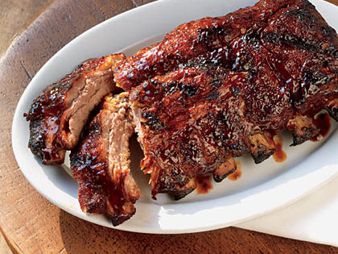

<!-- We don't need a full layout in this file because this page will be parsed with Ajax. -->

<div class="pages">
    <div data-page="about" class="page">
        <!-- Top Navbar -->
        <div class="navbar">
                <div class="navbar-inner">
                        <div class="left">
                                <a class="link back">
                                    <i class="icon icon-back"></i>
                                    <span class="ios-only">Back</span>
                                </a>
                            </div>
                    <div class="title">Baby Back Ribs</div>
                </div>
            </div>

        <div class="page-content">
            <div class="container">
                <div class="content-block">
                    <div class="block">
                        
                        <p>Baby back ribs (also back ribs or loin ribs) are taken from the top of the rib cage between the spine and the spare ribs, below the loin muscle. They have meat between the bones and on top of the bones, and are shorter, curved, and sometimes meatier than spare ribs.</p>
                    </div>
               </div>
           </div>
       </div>
    </div>
</div>
